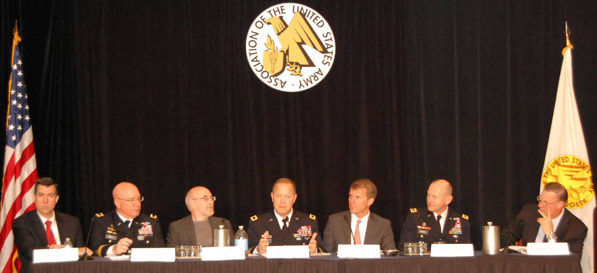

Cyber and Strategic Landpower: Three Big Questions
by Nate Fick

Yesterday, I was the tech company voice on a panel with senior military officers, including LTG Edward Cardon, commander of the U.S. Army Cyber Command. Our topic was the role of cyber in support of strategic landpower, and the discussion (which was great) boiled down to three big issues for me:
- What vulnerabilities will exist in the future force,
- How can we ensure resilience in the face of those vulnerabilities, and
- How can the Army build a culture that’s agile enough to succeed in the cyber world?
So here are some brief thoughts:
- Vulnerabilities. For more than 25 years the military has talked about variations on the theme of total battle-space awareness – of increasing soldiers’ and commanders’ situational awareness by turning every platform (and I include individual people as platforms in this sense) into sensors. Military platforms are increasingly walking IP addresses, walking sensors, covered with radios, cameras, interactive maps, and – eventually – wearables and embedded technologies. Think of all these endpoints as cavalry doing constant reconnaissance, and that presents both huge opportunities for data collection and awareness and some significant vulnerabilities given these connections and our increasing reliance on them.
- Resilience. Building secure systems is obviously essential, as is visualization so you can detect before deciding whether/how to respond, but really getting to “mil-spec” in this sense requires significant human components in addition to the technical ones. It’s useful to look to history when we talk about resilience for the military. I’d argue that we’ve always had some basic tenets of what constitutes resilience, and those are still useful here:
- Excellence in the fundamentals. Land warfare hasn’t changed all that much since Thucydides; when the GPS fails, you still better know how to use a map and compass, and when the cyber systems fail, you still better know how to use a knife (hyperbolic, but making a point here…)
- Jointness. Since Murphy’s Law always rules on the battlefield, we need to ensure one standard, one language, and maximum interoperability of systems. Remember that U.S. failures in Grenada in 1983 were a great catalyst for Goldwater Nichols and the forced integration of the “Joint era.” We have a largely green-field opportunity now to build our cyber forces the right way from the start – emphasizing openness, ease of use, interoperability, and the ability to scale.
- Training exercises. Only through rapid real-world iteration can we even begin to understand what resiliency looks like, and of course there’s no substitute for turning the map around and seeing what our cyber attack surface looks like from the adversary’s perspective. From a utility standpoint, therefore, there’s pretty significant convergence between offensive and defensive cyber capabilities for government actors – we can use offensive capabilities and learnings to test and strengthen our defenses.
- Culture. This is where I feared being the skunk at the picnic. Having commanded military units in combat and now running a venture-backed software company, I’ve lived on both sides of the cultural chasm. So while I start with a basic skepticism about the military’s ability – culturally – to recruit and retain great cyber talent, I do think there are some things that can be done to better the odds:
- First, we need to fix the acquisition process for software products or else we will effectively take the most innovative private sector solutions off the table. This should not be as hard as it seems. In terms of overall dollars, capital intensiveness, and program duration, software products are small projects compared with building ships and jets. I cannot speak to the legal and bureaucratic aspects of this change, but I did make one point about it from a philosophical perspective: the military must stop equating capability with cost – better stuff need not be more expensive stuff! Use the budgetary pressure of this downturn to replace the products and people that don’t work. And, unlike with massive systems, where I understand the need for some developmental burden-sharing, with most software products the vendors — not the government — should assume the technical and financial risk.
- Second, we need to understand that cyber has a different talent base…but motivated by the same intangibles. You need to look for talent in different places (not always high school football teams), hold them to different standards (it doesn’t matter how many pull-ups they can do), and probably ought to consider tailored workplace cultures (0600 formation isn’t going to work in your favor). But they’re smart and committed, and they – like everyone else who takes that oath – will be forgoing other options and choosing public service because they believe in this country, they believe in their mission, and they believe in their comrades.
- Third, we need to force the seniors to get granular. Waving hands about “all this cyber stuff” won’t cut it. Everyone in the room who wasn’t born digital is fooling himself or herself to think you can get where you need to be without making a commitment similar to that made by Captain Bull Halsey when he went to flight school because he and others saw the writing on the wall about the future of aviation for the Navy. We cannot afford to have a gap of another 10 or 20 years before we have enough granular understanding of cyber in the senior ranks.